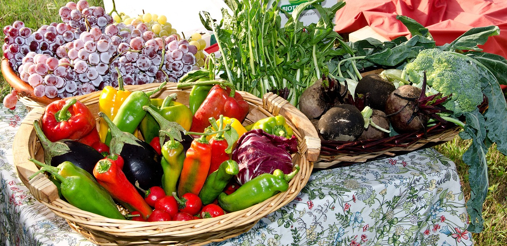
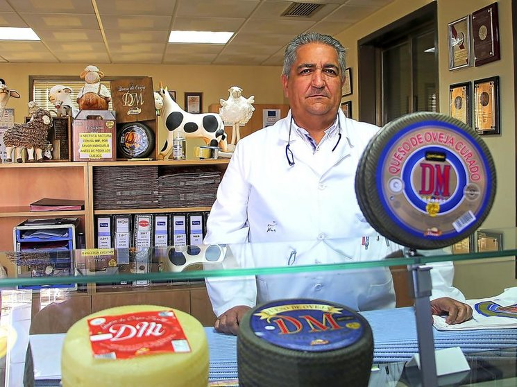
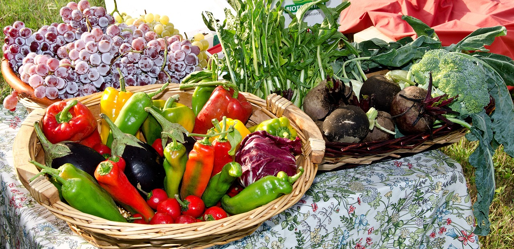
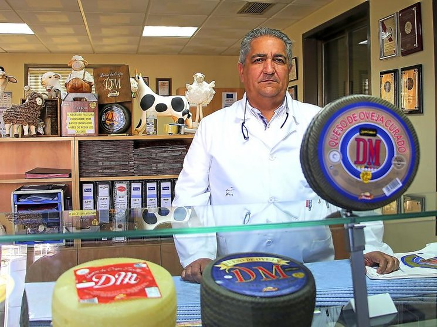
 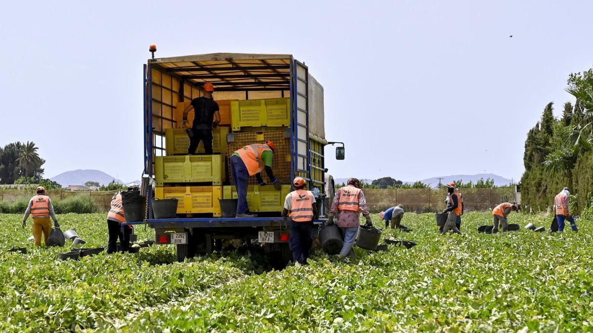
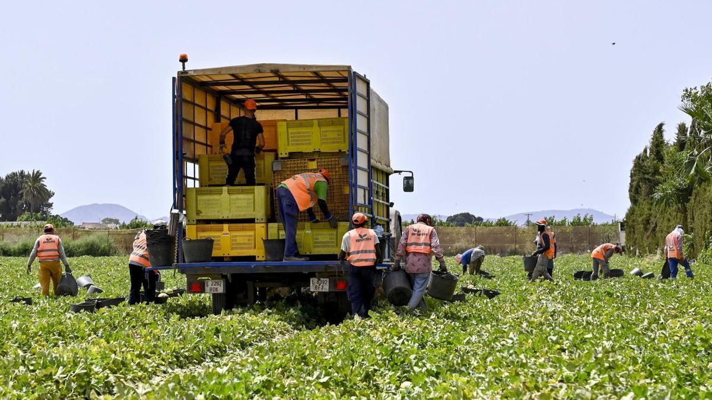
 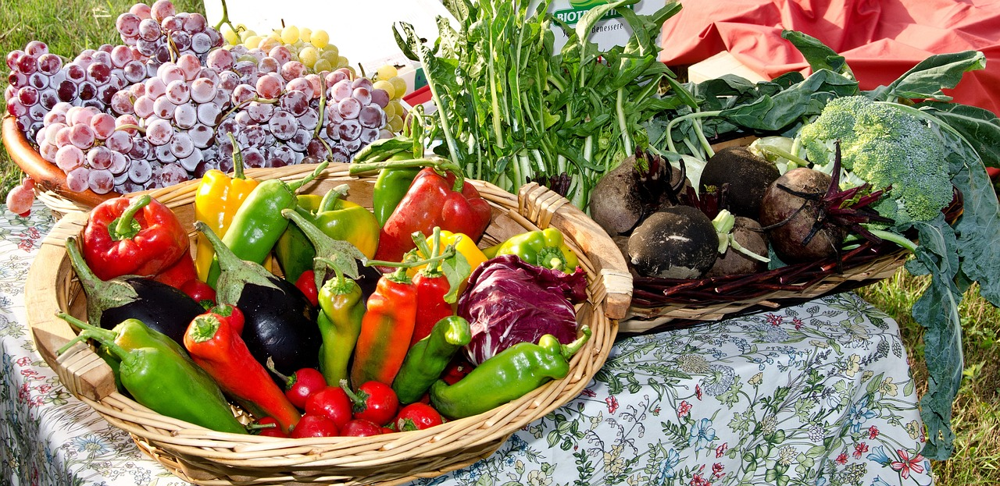
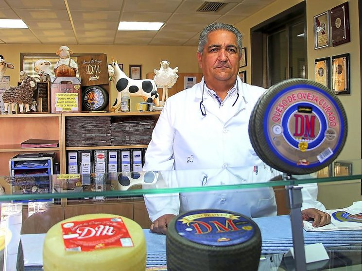
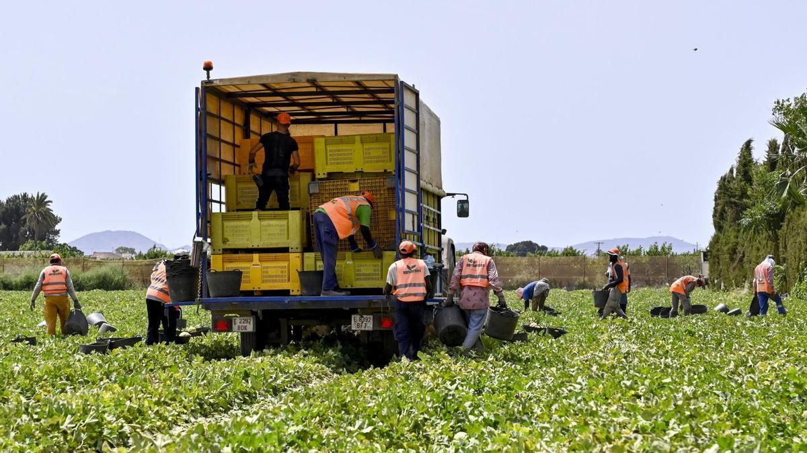
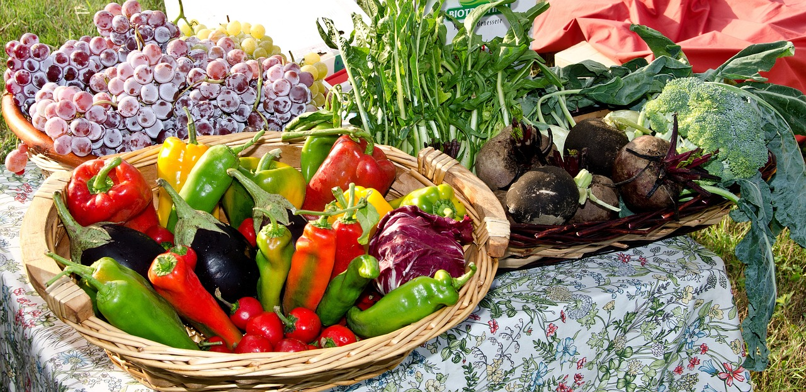
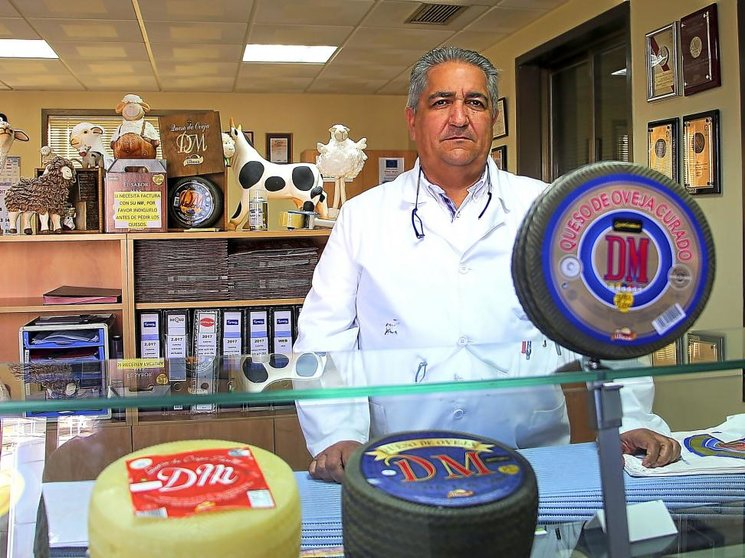
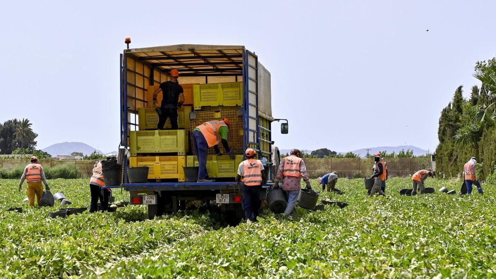
Artesanía en tus manos.
Descubre la belleza de la cerámica hecha a mano,
cada pieza es un reflejo de la decicación y el amor del artesano.
Sabor a hogar.
Disfruta de guisos tradicionales, preparados con recetas
que han pasado de generación en generación, llenando tu
hogar con sabores auténticos.

De la granja a tu mesa.
Conéctate con la naturaleza a trvés de nuestros
productos de granja, criados y cuidados en campos
abiertos, garantizando su frescura y calidad.

Manuel:
"Estoy encantado de expresar mi más sincera gratitud hacia la empresa de productos rurales Travo Rural por proporcionar servicios y productos de calidad excepcional."
Pepe:
"Lo que realmente destaca para mí es la atención al cliente que recibí. En cada interacción, el personal demostró un profundo conocimiento sobre los productos."
Eliana:
"Su compromiso con la excelencia en cada aspecto de su negocio, desde la atención al cliente hasta la calidad de los productos, los distingue como líderes en su campo."
Itziar:
"Cada artículo refleja el cuidado y el amor que la empresa dedica a su artesanía, desde las herramientas agrícolas hasta los productos alimenticios frescos."